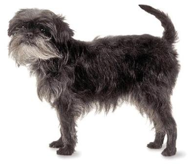
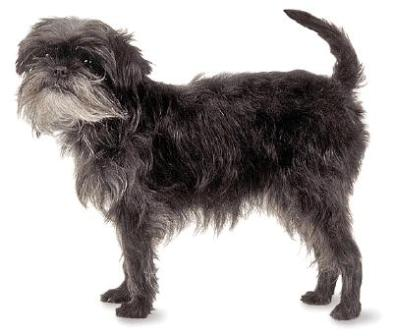

Raças de pinscher
Além do Pinscher Miniatura, que é o mais famoso aqui no brasil, existem outras 5 raças de Pinshcer.
| Pinscher Austríaco |  |
| Dobermann |  |
| Pinscher Alemão |  |
| Affenpinscher |  |
| Cão fazendeiro da Suécia e Dinamarca |  |
Além do Pinscher Miniatura, que é o mais famoso aqui no brasil, existem outras 5 raças de Pinshcer.
| Pinscher Austríaco | |
| Dobermann | |
| Pinscher Alemão | |
| Affenpinscher |  |
| Cão fazendeiro da Suécia e Dinamarca | |